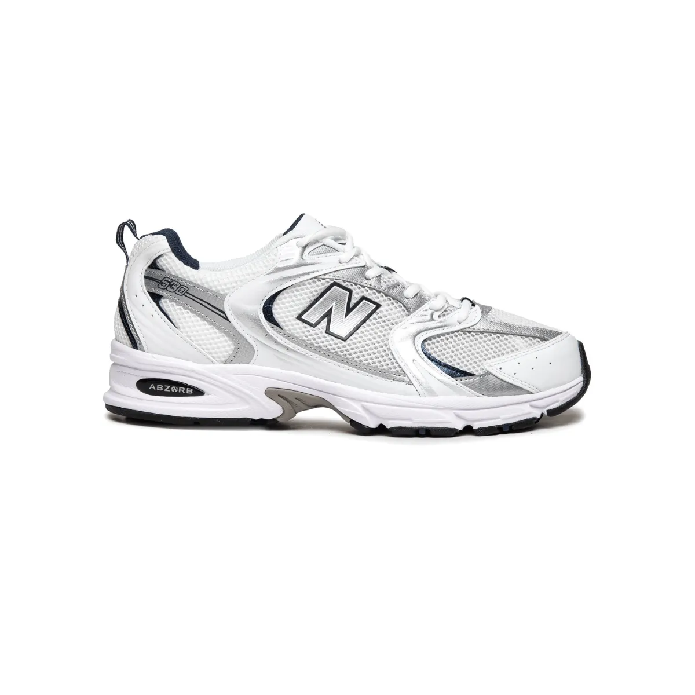
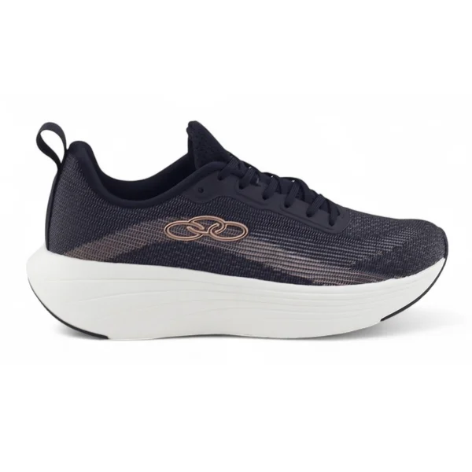
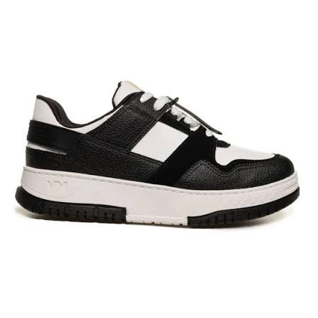

TÊNIS ESPORTIVOS

Descubra diferentes modelos de tênis esportivos e conheça opções para acompanhar sua rotina com conforto e estilo.
Seu estilo começa pelos pés!
Descubra diferentes modelos de tênis esportivos e conheça opções para acompanhar sua rotina com conforto e estilo.
Os tênis esportivos são desenvolvidos para diferentes atividades e necessidades. Existem modelos para corrida, academia, caminhada e também para o uso diário. Na hora de escolher, é importante observar o conforto, o tipo de atividade e as características do calçado.

Modelos desenvolvidos para acompanhar caminhadas e corridas, oferecendo conforto durante os movimentos.

Opções para exercícios e atividades físicas, com diferentes formatos e características.

Ideais para quem gosta de unir conforto e estilo nos compromissos e passeios do dia a dia.
| Categoria | Característica | Indicação |
|---|---|---|
| Corrida | Conforto e amortecimento | Corridas e caminhadas |
| Academia | Estabilidade e suporte | Exercícios físicos |
| Casual | Design e praticidade | Uso diário |